A fast, keyboard-friendly text expander. Type a short abbreviation anywhere — it turns into a full phrase, a code block, or a smart template with dates, clipboard and fill-in fields.
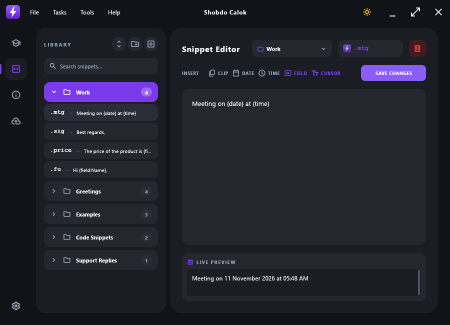
One small portable program (no installer, no Python, no runtime). It sits quietly in your system tray.
Works in any app — browser, Word, chat, email, code editors. Matches only at word boundaries, so it never fires inside normal words.
{date}, {time}, {clipboard}, {cursor} and {field:Label} fill-in forms.
Organise snippets in folders, drag & drop to reorder or move between folders, search instantly.
Sign in with your own Google account to back up and restore your snippets. Keeps a history of 10 backups.
Follow Windows, or force dark or light mode.
Checks GitHub Releases and installs new versions in one click — your data is never touched.
The keyboard hook re-installs itself after sleep, hibernate or unlock. No need to restart the app.
Everything lives in an AppData folder next to the exe. Move the folder anywhere — even “Run at startup” follows it.
ShobdoCalok.exe and put it in its own folder (for example D:\Tools\ShobdoCalok\)..hello — it becomes “Hello! How are you today?”If Windows SmartScreen warns about an unknown publisher, choose More info → Run anyway.
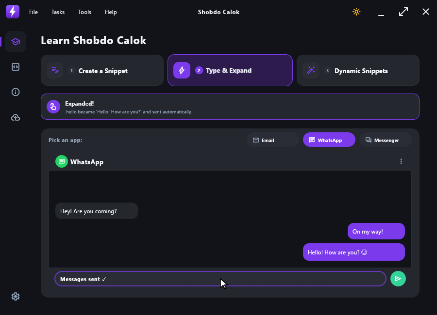
The left panel is your library, the right panel edits the selected snippet.
.sig) and write the expansion text.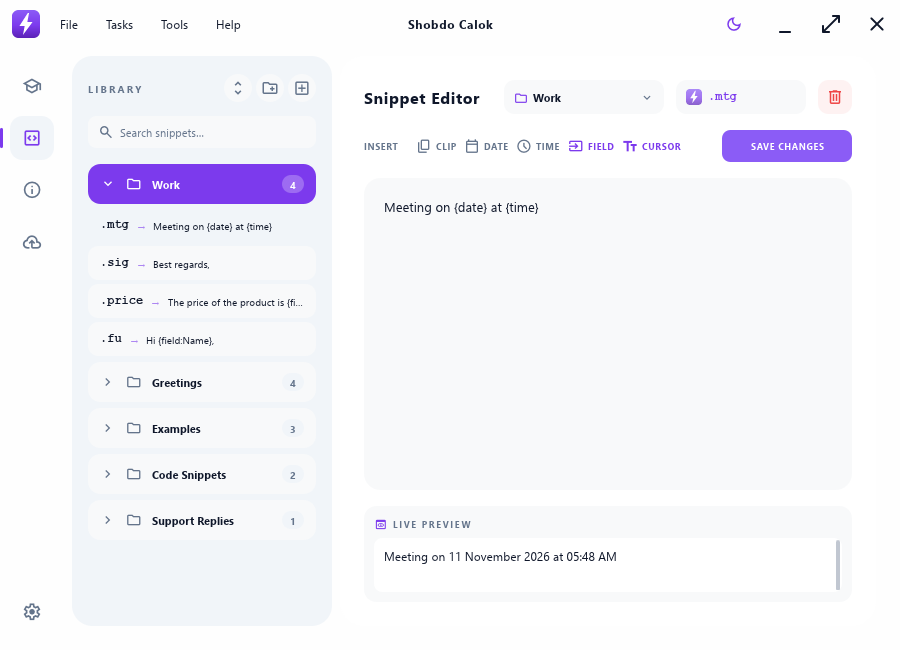
Put these inside a snippet’s text; they are replaced at the moment you type the trigger.
| Token | Becomes | Example |
|---|---|---|
{date} | Today’s date | 11 November 2026 |
{time} | Current time (12-hour) | 02:30 PM |
{datetime} | Date and 24-hour time | 2026-11-11 14:30 |
{date:%d/%m/%Y} | Date in your own format (strftime) | 11/11/2026 |
{time:%H:%M}, {datetime:…} | Custom time / date-time formats | 14:30 |
{clipboard} | Whatever you last copied | “You copied: …” |
{cursor} | Where the text cursor is placed after expanding | Hi {cursor}, how are you? |
{field:Label} | Asks you for a value in a small form | The price is {field:Price} |
When a snippet contains {field:…} tokens, a “Complete your form” window appears over the app you are typing in. Each field is labelled with the text that comes right before it. Press Enter or Insert Snippet to paste; Esc cancels and inserts the text without the fields.
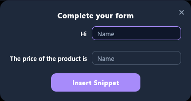
Hi {field:Name}, … {field:Price}.The graduation-cap page plays animated, self-running lessons — a mouse pointer clicks and types for you.
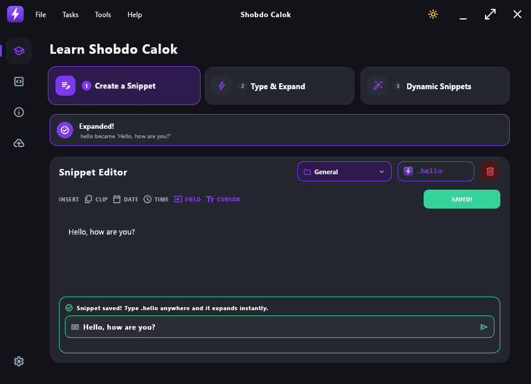
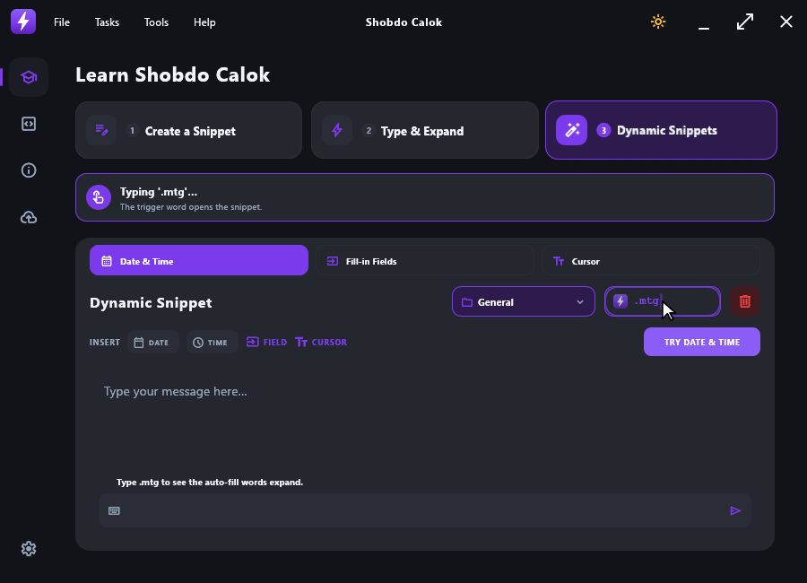
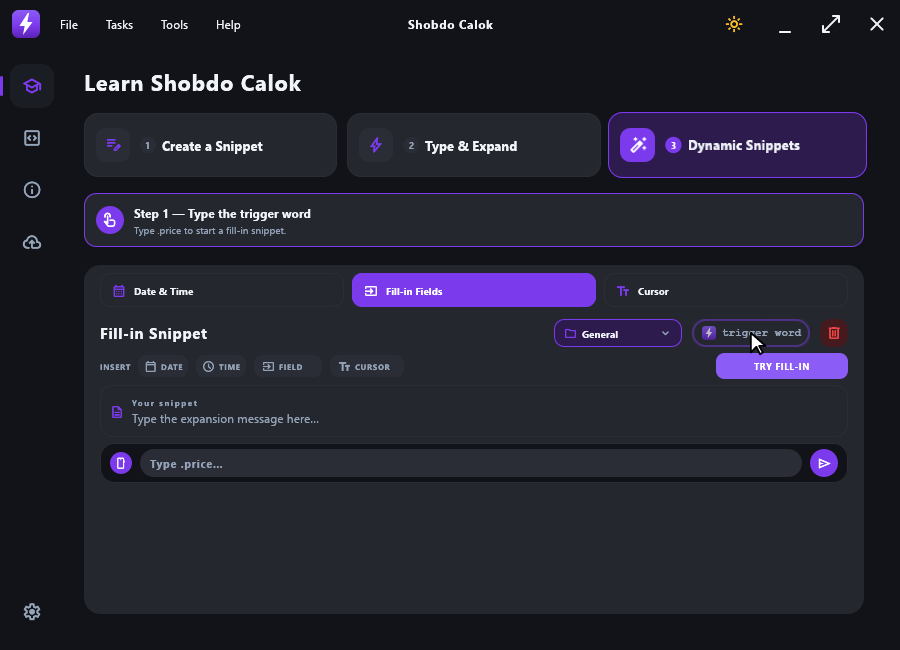
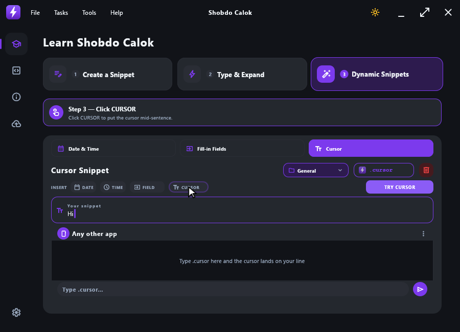
Export Library saves all snippets to a JSON file; Import Library replaces your library with one.
Backups are stored in a private, app-only area of your Drive (they don’t clutter your files). The app keeps the 10 newest.
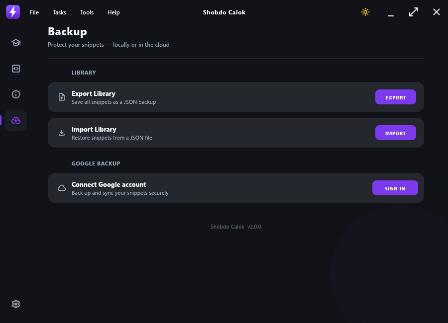
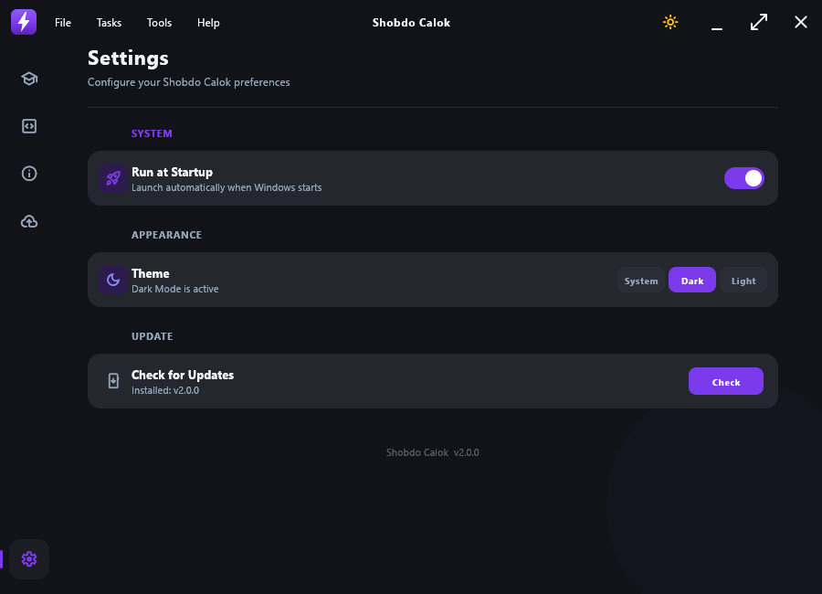
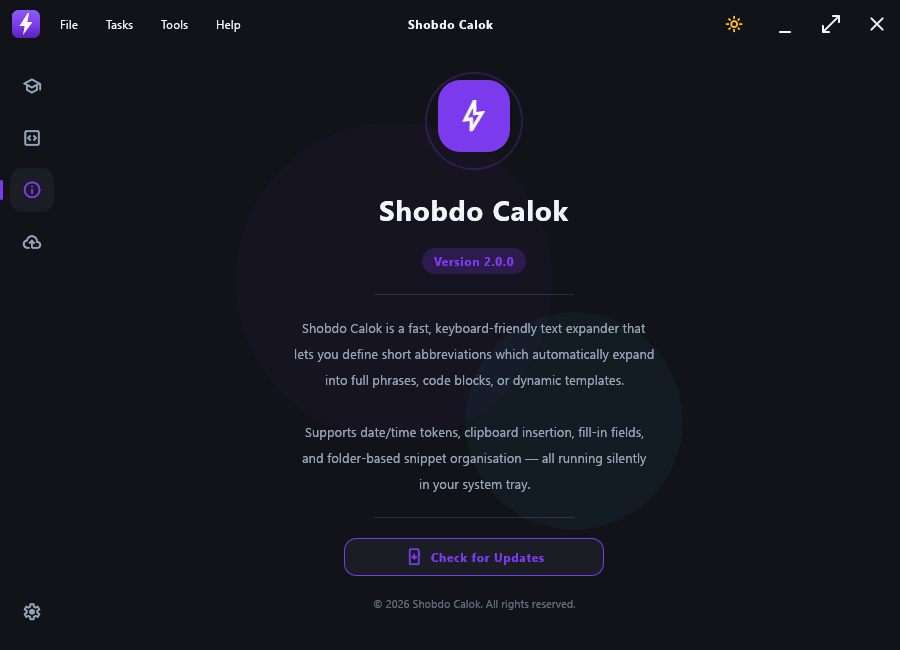
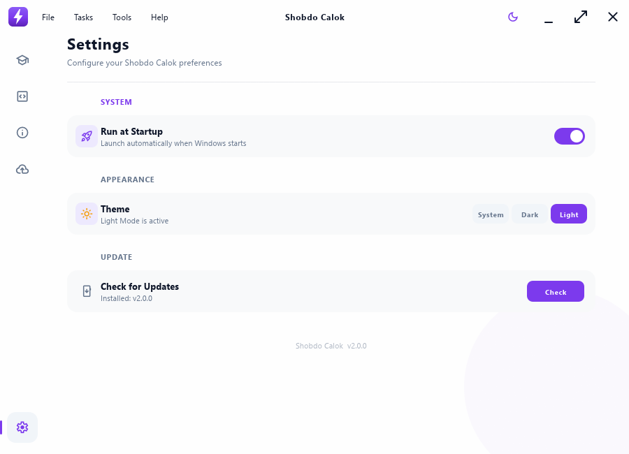
In the AppData folder next to ShobdoCalok.exe: snippets.json, settings.ini and (if you signed in) google_token.json. Copy the whole folder to move or back up everything.
Yes. The app listens for resume and unlock events and also detects a sleep gap itself, then re-installs its keyboard hook automatically.
Type the trigger after a space or at the start of a line (it won’t fire in the middle of a word), check the tray menu isn’t set to Paused, and make sure the app isn’t blocked by a program running as Administrator — Windows doesn’t let normal apps type into elevated windows.
Keystrokes are only compared with your own trigger words in memory — nothing is logged or sent anywhere. The source code is open on GitHub.
Yes — use Check for Updates in the old app, or download the new exe into the same folder. The existing AppData folder is used as-is.